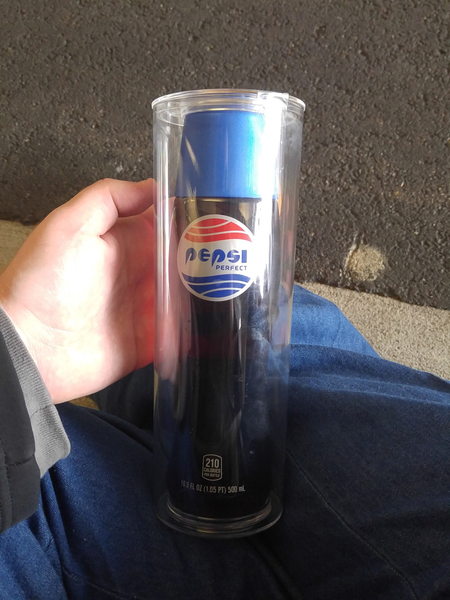
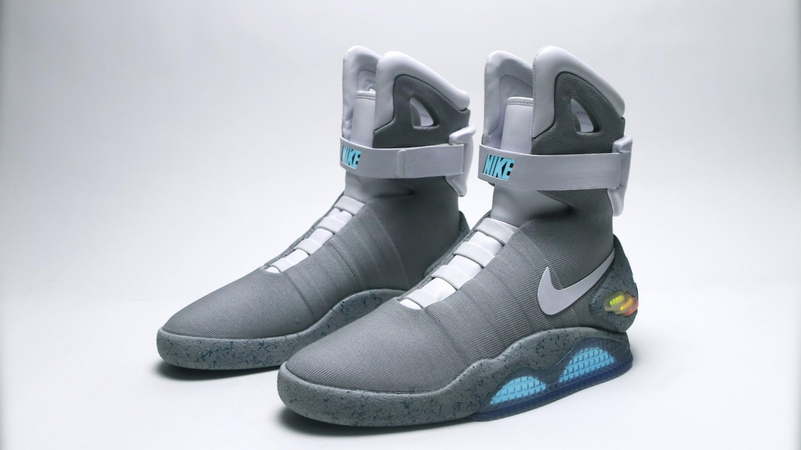
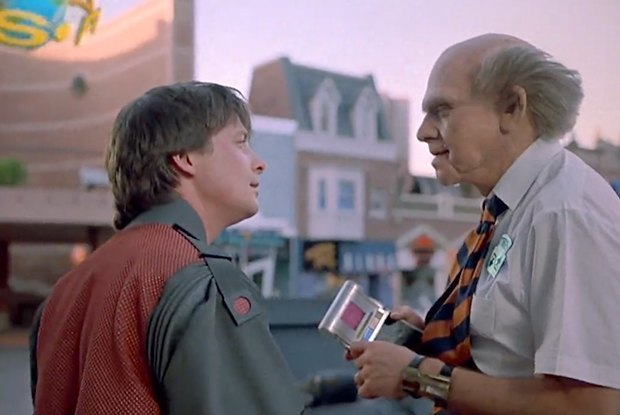
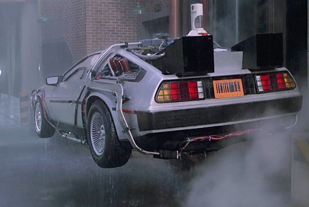

21 октября официально наступит «будущее» по версии знаменитой кинотрилогии режиссёра Роберта Земекиса Назад в будущее. Активные приготовления к знаменательной дате начали как задействованные в картинах бренды, так и сама студия Universal.
Официальный Ховерборд
Несмотря на старания учёных со всего мира, полноценный парящий скейтборд к 2015 году так и не был разработан, а действующие прототипы либо сильно ограничены в передвижениях (работают только над металлическими поверхностями), либо вовсе оказываются маркетинговыми трюками.
Так и не дождавшись реального решения, студия Universal 12 октября выпустила официальный рекламный ролик того самого розового ховерборда, который Марти Макфлай в фильме позаимствовал у маленькой девочки.
Жалко, что он так и остался несбывшейся мечтой. По словам сценариста Боба Гейла, сразу после выхода Назад в будущее 2, дети завалили его письмами с просьбой прислать им эту «доску».
Челюсти 19
Когда Марти прибывает в 2015 год, одно из первых его впечатлений — голографическая реклама фильма Челюсти 19. Сегодня, когда большая часть кинотеатров мира оборудована цифровыми 3D-проекторами, а виртуальная реальность и голографические очки вот-вот выйдут на массовый рынок, можно сказать, что пророчество сбылось.
Только вот франчайз Челюсти не дожил до 19 части, и Universal вновь пришлось снимать поддельный трейлер. Зато у нас есть Акулий торнадо 3 и Форсаж 7 (от всё той же Universal).
Pepsi Perfect
Не осталась в стороне и компания Pepsi, приготовившая к 21 октября ограниченную партию нового напитка Pepsi Perfect с использованием натурального сахара. 6500 бутылок показанной в фильме формы будут доступны в магазинах США, а также для заказа в сети по цене 20 долларов и 15 центов.
Впрочем, Pepsi явно приготовила намного больше экземпляров. Она уже разыгрывает бутылки в различных конкурсах или даже раздаёт бесплатно на мероприятиях вроде Comic-Con.
Nike Mag
Несмотря на то, что компания Nike пообещала фанатам выпустить самозашнуровывающиеся кроссовки Mag в 2015 году, их судьба до сих пор остаётся неизвестной. За неделю с лишним до дня икс компания по-прежнему не делится подробностями о старте продаж и ценах футуристической обуви.
Переиздания фильма
Киностудия Universal не упустила лишнюю возможность в очередной раз заработать и на самой картине. 21 октября в продажу поступит новое коллекционное переиздание трилогии на Blu-Ray и DVD. В комплект войдёт 64-страничная книга о создании, новый бонусный диск, одноимённый анимационный сериал и коробка с «потоковым накопителем».
21 октября трилогия вернётся и на экраны кинотеатров по всему миру, включая российские. В этот день фильмы можно будет посмотреть в петербургской Авроре и московском Пионере.
21 октября также состоится премьера документального фильма Назад во времени (Back In Time), в котором создатели трилогии расскажут о своих воспоминаниях, связанных с проектом.
Планшеты и компьютеры
Планшет, на котором Марти предлагают поставить подпись, — чтобы по доброй традиции вложиться в починку часов на городской ратуше.

режиссёр фантастического кино и сооснователь студии Lateral Summer Компьютеры стали меньше, но не радикально. Взгляните на фото из 1985-го, астронавт держит в руках чудовищно дорогой по тем временам ноутбук, но вполне настоящий. В фильме встречаются и подобия планшетных компьютеров. Но в телефоны и планшеты я не очень верю — серьёзной работой на них не займёшься, а планшеты в фильме как раз подчинены исключительно мелким задачам: подписи и верификации личных данных.
Машины с «переносным реактором»
В 2015-м автомобили, насколько видно по модификации ирландской DeLorean DMC-12, переделывали в автолёты, с реакторами, поглощающими пищевые отходы и пластиковые бутылки пепси. Такая комбинация не только позволяла летать, но и помогала в проблеме переработки мусора. Для летающих автомобилей будут соответственно устроены автомагистрали в воздухе — с разметкой и парящими знаками.
Летающие машины, очаровывавшие и Джо Белла, и Сида Мида, разрабатывавшего дизайн «Бегущего по лезвию», — камень преткновения. Оба арт-директора по образованию были автомобильными дизайнерами: потому, прорабатывая реалистичные сценарии для других объектов, они всё равно отрывались на автомобилях, уделяя много времени дизайн-решениям.
Попасть в точку с левитацией не удалось во многом из-за сменившихся мировоззрений: сейчас, когда фокус делается на альтернативные источники энергии и совместное «осознанное» потребление, вместо технологических прорывов нас ожидают новые социальные механики, меняющие самый принцип взаимодействия с автомобилем.
Совсем хардкорные фанаты фильма даже нашли объяснение тому, что мы движемся в какое-то неправильное будущее: как сообщает Futurepedia, мы не передвигаемся на летающих машинах лишь потому, что в конце третьего фильма Марти и Док что-то сделали не так на Диком Западе (что — сказать сложно, потому что это что-то случилось уже за кадром), и мы оказались в другом временном рукаве.
режиссёр фантастического кино и сооснователь студии Lateral Summer Летающих машин нет: внесерийные прототипы не в счёт, а машины, находящиеся в серийном производстве, крепко стоят на земле.